外部濾過器
水中ポンプ、コンテナボックス、塩ビ管部材を使用して外部濾過器を製作した。


-
Aは物理濾過用の濾過綿（ポリエステル繊維）で百均やホームセンターで購入。濾過綿の下に百均の猫除けマットを裏返して置いて出水口が詰まらないようにする。

- Bは生物濾過用の軽石。ホームセンターの園芸用鉢底石を百均の洗濯ネットに入れて使用。パイプ状の生物濾過専用濾材を使用しても良い。
-
コンテナボックスは太陽光を遮断する不透明の#7（20x35x11㎝）と#11（20x35x18㎝）の2サイズを上下に重ねる。
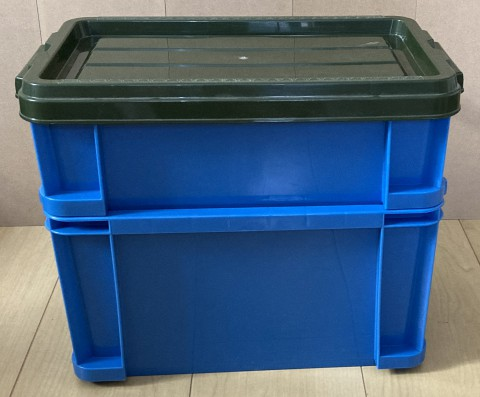蓋の色が異なるのは、前に製作した濾過器の余った部材を流用したため -
水中ポンプはこれまでに以下の2機種を使用。
- LNSTUDIO 吐出量1500L/H（揚程1.5M、電力15W、対応ホース内径13,16）

- PiDiEn 吐出量900L/H（揚程1.5M、電力15W、対応ホース内13,16）
 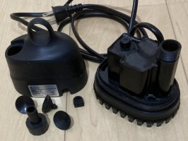
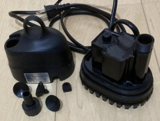
- LNSTUDIO 吐出量1500L/H（揚程1.5M、電力15W、対応ホース内径13,16）
- 水中ポンプはネット（みかんが入っているようなヤツ）と100均の小型メッシュ穴開きバスケットに入れることで、ヌマエビやメダカや落ち葉を吸い込まないようにした。
-
水中ポンプにホースを繋ぎ、ホースニップルを使用して上コンテナボックスの塩ビ管部材と接続する。
- ホースニップル竹の子外形とホース内径は水中ポンプ付属ホースジョイント外形と適合するサイズのモノを選定する必要がある
- 水中ポンプに複数のホースジョイントが付属する場合は、流量を考慮してホースジョイントを選定する
- 柔らかめのホースは内径がホースジョイント外形―1mm、固めのホースは内径がホースジョイント外形と同じモノを選定する
- ホースジョイント外形16㎜時にはホース内径15mmとホースニップル竹の子外径16mmのモノを選定した
- ホースジョイント外形13㎜時にはホース内径12mmとホースニップル竹の子外径13mmのモノを選定した
上コンテナボックス製作
上コンテナボックスの入口配管は、呼び径13のパイプ・水栓エルボ・バルブソケット・水栓ソケット・エルボおよびパッキンで構成する。

- 上コンテナボックス入口配管用の穴径は22mm、写真の竹の子ドリルかホールソーをドリルドライバーに装着し低速回転で穴を開ける（インパクトドライバーは使用不可）
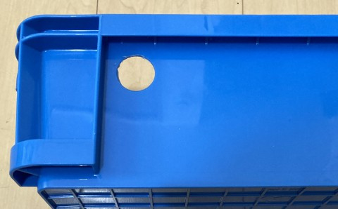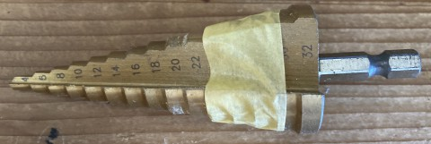 - 穴に装着するのは呼び径13の水栓ソケットとバルブソケット、使用したパッキンはOリングゴム21（内径21㎜）
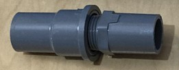パッキンはユニオンパッキンPP40-26x21（内径21mm）やユニオンパッキンPP40-30x20（内径20mm）でも良い
上コンテナボックス底に穴を開け、呼び径20のバルブソケット・水栓ソケットおよびパッキンを取り付け出水口とする。

- 上コンテナボックス内のバルブソケットは接合部を残して鋸でカットする


- 出水口配管用の穴径は26mm、使用したパッキンはOリングゴム26（内径25.7mm）
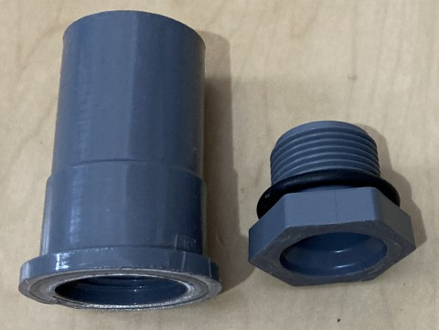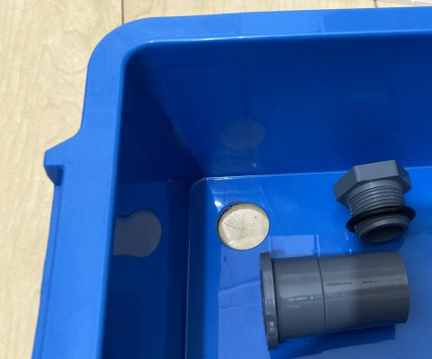 - 入口配管と出水口配管を取り付ける
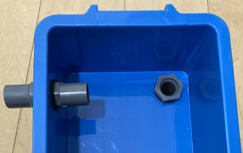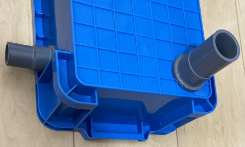
- 濾過綿に広く排出されるようにパイプに複数の穴を開ける
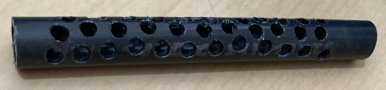 - ホースニップルから穴あきパイプまでの入口配管を組み立てる
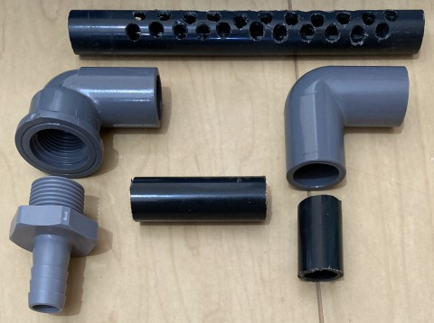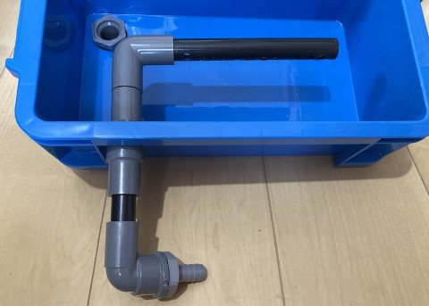
下コンテナボックス製作
上コンテナボックスからの水受け口として、呼び径40のパイプに複数の穴かU字の切り欠きを開けて設置する。
 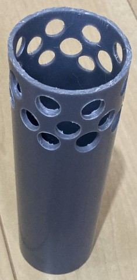
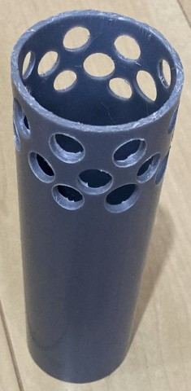
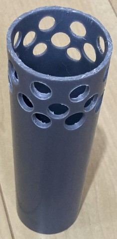
下コンテナボックスの出口配管は2系統とし、第1系統は呼び径20の水栓エルボ・バルブソケット・パッキン、
第2系統は呼び径16の水栓エルボ・バルブソケット・パッキンで構成する（第2系統の呼び径は16以外でも良い、この時は余っていた呼び径16の部材を利用した）。
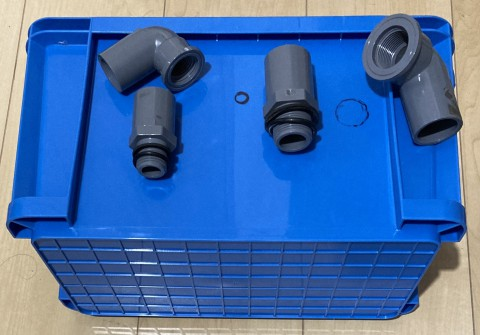
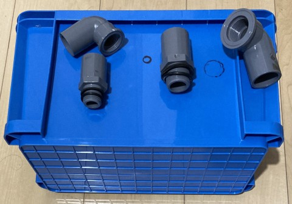
出口配管は1系統でも良いが、入口配管に対して出口配管の水の流れが悪いと途中で水が溢れるため、出口配管は2系統の方が調整しやすい
- 第1系統（写真右）の穴径は26mm、第2系統（写真左）の穴径は22㎜
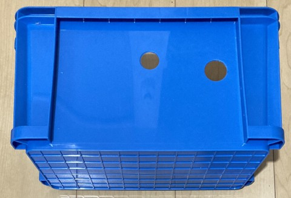 - 第1系統に使用したパッキンはOリングゴム26（内径25.7mm）とユニオンパッキンPP40-36x26（内径26mm）、第2系統に使用したパッキンはOリングゴム21（内径21mm）とユニオンパッキンPP40-26x21（内径21mm）
- 穴に出口配管部材を取り付け、上コンテナボックスからの水受け口を設置
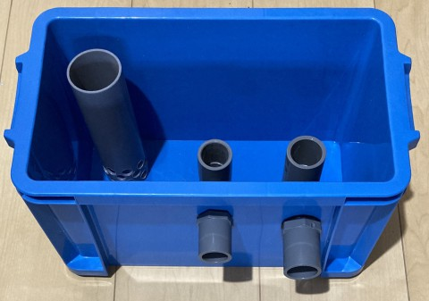パイプ穴の高さは、水受け口（写真左） > 第2系統（写真中央） > 第1系統（写真右）となるよう調整 - 出口配管に必要に応じてパイプやエルボを取り付ける
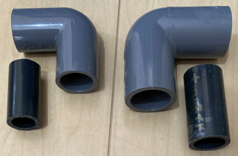
完成
全体を組み合わせ、濾材を入れて完成。
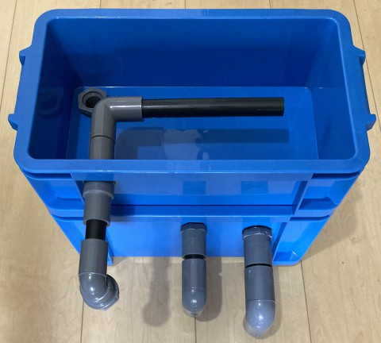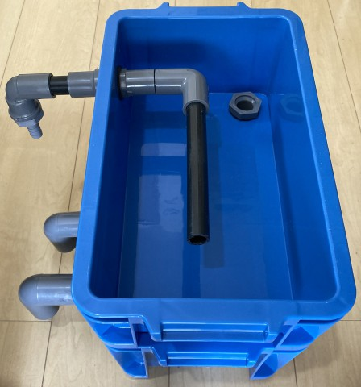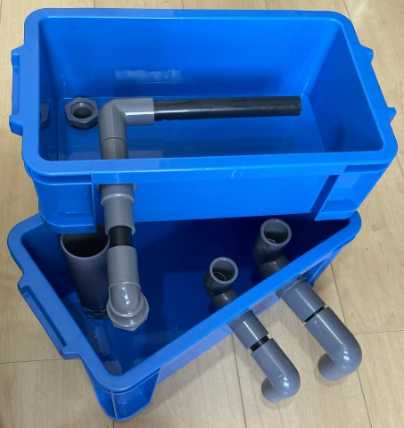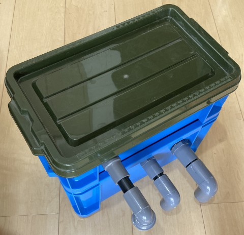
コンクリートブロックの上などに設置し、水中ポンプと接続する。
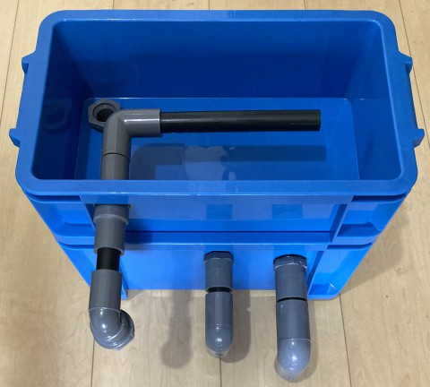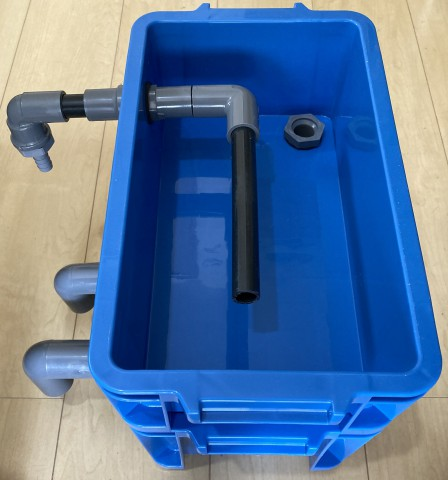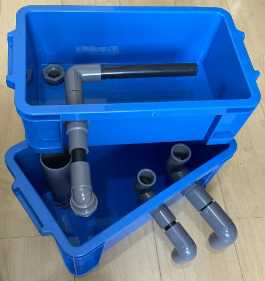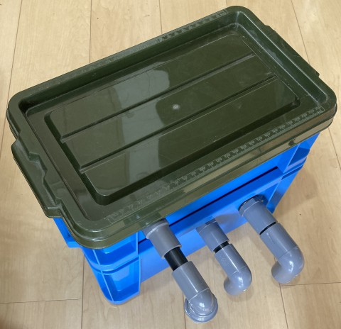
コンクリートブロックの上などに設置し、水中ポンプと接続する。
今後について
同レベルのモノでよろしければ濾過器製作をお手伝いしますので、お気軽にご連絡ください。
→ 飼育係の連絡先